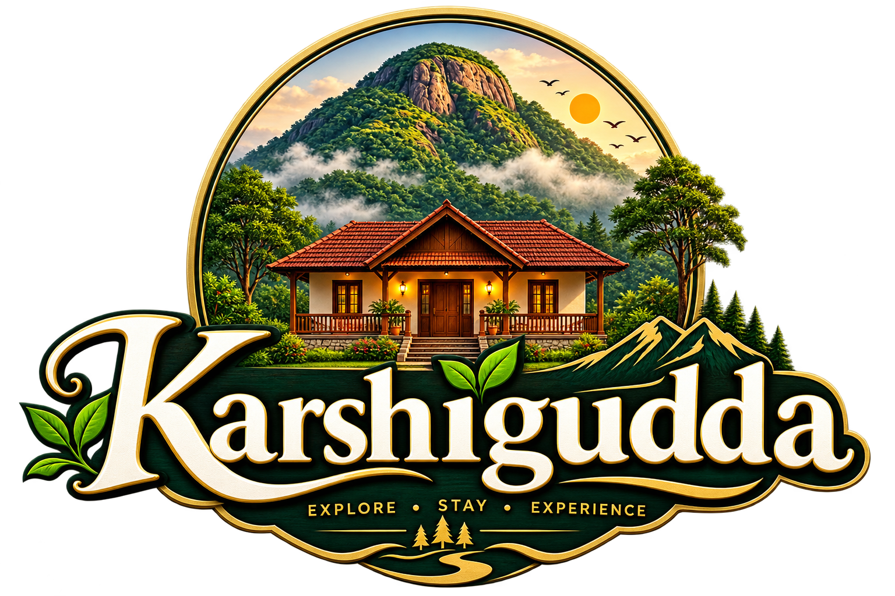

Where the hills remember every season.
Welcome to Karshigudda, your starting point for discovering the breathtaking beauty of Malenadu, Karnataka — a land of mist-covered hills, dense green forests, winding mountain roads, coffee plantations, waterfalls, and peaceful villages.
Explore. Experience. Stay.
Welcome to Karshigudda
Discover the beauty of Malenadu with Karshigudda — your gateway to the misty hills, lush forests, winding roads, and peaceful landscapes of Karnataka. We provide reliable jeep services to the hills and scenic destinations of the Malenadu region, making it easier for you to explore places that are difficult to reach by regular vehicles. Whether you're looking for an adventurous hill journey, a peaceful escape into nature, or a memorable trip with family and friends, our local jeep service is ready to take you there.
After a day of exploring the hills, relax and enjoy a comfortable stay at our guesthouse, surrounded by the calm and natural beauty of Malenadu.
- Resort Facility
- Vehicle Facility
- Tour Guidance

Selected Work
Portraits of the wild.
A gathering of still frames from years spent walking, waiting, and watching the light move across the land.


Motion
A film that breathes with the valley.
Shot across a single turning season, our short film follows the rhythm of the hills — from the first mist of morning to the last gold of dusk.
Where We Work
Rooted in the Western Ghats.
Our studio and the landscapes we return to lie across the misted hills of Malenadu. Explore the map to find the places behind the frames.